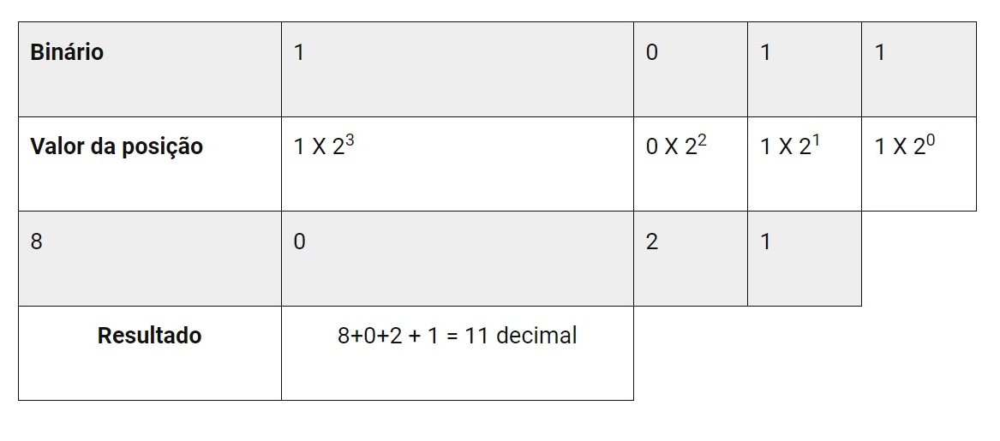
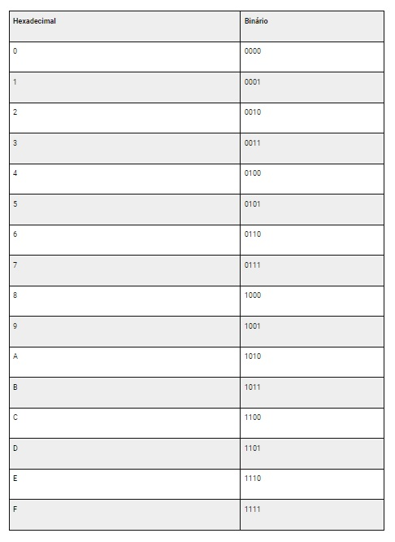

Sistema Binário
O sistema binário é um sistema de numeração em base 2, composto apenas pelos dígitos 0 e 1. A base 2 significa que cada posição de um número binário representa uma potência de 2.
O sistema binário é amplamente utilizado em sistemas digitais e computadores. Isso é devido ao fato destes dispositivos eletrônicos serem baseados em circuitos que podem estar ligados (representado por 1) ou desligados (representado por 0). Esses estados são codificados usando o sistema binário.
A conversão entre números binários e outros sistemas numéricos é feita usando potências de 2. Por exemplo, para converter números binários em decimais, deve-se multiplicar cada dígito binário pela potência de 2 que corresponde à sua posição e somar os resultados. Por outro lado, para converter um número decimal em binário, deve-se dividir sucessivamente por 2 e usar o restante dessas divisões para formar o número binário.
Conversões entre Sistemas
- Binário para Decimal -
Passo 1 : Inicie atribuindo as posições aos dígitos binários, começando da direita para a esquerda:
Posição: 6 5 4 3 2 1 0
Binário: 1 1 0 1 1 0 1
Passo 2 : Agora, vamos calcular o valor decimal de cada posição. Para cada dígito binário, multiplicamos por 2 elevado à sua posição e somamos os resultados:
Sendo assim, decimal = 1 * 2^6 + 1 * 2^5 + 0 * 2^4 + 1 * 2^3 + 1 * 2^2 + 0 * 2^1 + 1 * 2^0
= 64 + 32 + 0 + 8 + 4 + 0 + 1 = 109
Portanto, o número binário 1101101 é igual a 109 em decimal.
Confira mais um exmplo a seguir, com a a conversão do número 1011 para decimal:
Fonte: https://embarcados.com.br/conversao-entre-sistemas-de-numeracao/
- Binário para Hexadecimal -
* Divida o número binário em grupos de 4 dígitos, começando da direita para a esquerda. Se a quantidade de dígitos do número binário não for múltipla de 4, adicione zeros à esquerda para formar grupos completos de 4 dígitos.
Atribua a cada grupo de 4 dígitos um dígito hexadecimal correspondente. Escreva o número hexadecimal resultante, combinando os dígitos hexadecimais atribuídos a cada grupo. Abaixo está um exemplo passo a passo:
Exemplo: Converter o binário 1101101 para hexadecimal.
Passo 1 : Divida o número binário em grupos de 4 dígitos:
- Binário: 1 1 0 1 1 0 1
- Agrupamento: 1101 101
Atribua um dígito hexadecimal a cada grupo de 4 dígitos:
Para o grupo 1101, atribuímos o dígito hexadecimal D.
Para o grupo 101, atribuímos o dígito hexadecimal 5.
Escreva o número hexadecimal resultante. Combinando os dígitos hexadecimais atribuídos a cada grupo, temos: 5D.
Portanto, o número binário 1101101 é igual a 5D em hexadecimal.
A seguir está a tabela com as correspondências entre cada dígito hexadecimal e os dígitos binários.
Tabela 1 - Equivalência entre binários e hexadecimais
Fonte: https://embarcados.com.br/conversao-entre-sistemas-de-numeracao/